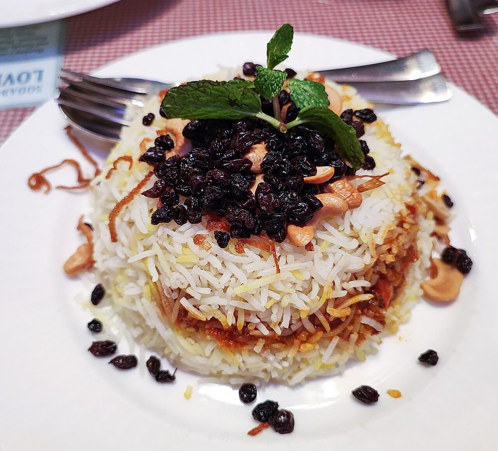

Berry Pulao
saffron rice layered over spiced chicken, studded with sharp sour-sweet dried fruit

Contains: milk, tree nuts
Checked against the ingredient list for ten allergens: milk, egg, fish, crustaceans, tree nuts, peanuts, sesame, mustard, soy and gluten. Brands vary, so read the label on anything new to you.
Ingredients
Quantities for 6.
- 500g, aged Basmati Rice
- 800g, boneless thigh, cut into 4cm pieces Chicken
- 200g, thick and whisked Yogurt
- 4 medium, finely sliced Onion
- 4cm piece Ginger
- 10 cloves Garlic
- 3, slit Green Chilli
- 1/2 cup leaves Mint
- 1/2 cup, chopped Coriander Leaves
- 2 tsp Garam Masala
- 2 x 3cm sticks Cinnamon
- 6 Cloves
- 5 green pods Cardamom
- 2 Bay Leaf
- 1 tsp, whole Black Pepper
- a generous pinch, about 30 strands Saffron
- 3 tbsp, warm Milkfor soaking the saffron
- 5 tbsp Ghee
- 30g, halved Cashewoptional
- 40g Raisinsstand in for barberries, tossed in lemon juice for sourness
- 10, slivered Dried Apricotthe second half of the sour-sweet fruit
- 1, juiced Lemon
- to taste Salt
- 3 litres, for boiling the rice Water
Cookware
stovetop, oven
Before you start
- Soak the basmati in cold water for 30 minutes, then drain in a colander for 10 minutes. This is the difference between separate grains and a clump.
- Marinate the chicken in the yogurt, ginger-garlic paste, garam masala and salt for at least 1 hour, or overnight.
- Steep the saffron in the warm milk for 20 minutes; it should stain the milk deep orange.
- Toss the raisins and slivered apricot with the lemon juice and leave 15 minutes so they turn properly tart.
Method
- Fry the sliced onion in 4 tbsp ghee over medium heat for 15 minutes until dark brown and crisp, drain on paper, and set a third aside for the garnish.
- Fry the cashews in the same ghee for 1 minute until golden and set aside.
- Add the marinated chicken to the pan with two thirds of the fried onion and cook uncovered 20 minutes over medium heat until the yogurt tightens around the meat.If the yogurt splits, keep going and stir. It comes back together as the water cooks off.
- Stir in half the mint and coriander and cook 3 minutes more, then set the chicken aside off the heat.
- Bring 3 litres of water to a rolling boil with the cinnamon, cloves, cardamom, bay leaf, black pepper and 2 tbsp salt.Salt it like pasta water. This is the rice's only chance to be seasoned.
- Add the drained rice and boil 4 to 5 minutes, until a grain crushes between your fingers but still has a hard white core.Seventy percent cooked, no more. The rice finishes on dum and mush is irreversible.
- Drain the rice immediately and spread it on a tray to stop the cooking.
- Layer the chicken in a heavy pot, then the rice, then the lemon-soaked raisins and apricots, the reserved fried onion, cashews and the rest of the herbs.
- Drizzle over the saffron milk and the remaining 1 tbsp ghee, seal the pot with a tight lid or foil, and cook on the lowest heat 20 minutes, or in a 160C oven for 25.
- Rest 10 minutes sealed, then open and lift the pulao from the sides with a flat spoon so the layers stay visible.Never stir it round. Fold and lift, or the grains break.
Storage
Keeps 3 days refrigerated. Reheat covered with 2 tbsp water sprinkled over, on low heat or in a 150C oven for 15 minutes, so the rice steams rather than dries.
Nutrition Medium estimate
High protein: 39 g a serving, 23% of the calories
| Per serving374 g | Per 100 g | |
|---|---|---|
| Calories | 688 kcal | 185 kcal |
| Protein | 38.8 g | 10 g |
| Carbohydrate | 89.4 g | 24 g |
| of which sugars | 13.2 g | 4 g |
| Fibre | 4.2 g | 1 g |
| Fat | 19.1 g | 5 g |
| of which saturated | 9.1 g | 2 g |
| of which unsaturated | 8.2 g | 2 g |
Ingredients added to taste rather than by weight are counted as zero, so the true figure is a little higher than shown. Worked out from the listed quantities. Some of the ingredient list is given to taste rather than by weight, so treat these as a guide. Ingredients given to taste rather than by weight are counted as zero, so the real figure is a little higher than this. The + says so. Some ingredients have no exact match in the nutrient database and use the nearest equivalent: garam masala. Estimated from raw ingredients using USDA FoodData Central. Cooking changes are not modelled, and added salt is excluded, so sodium is not given.
Written and checked against sources, not cooked in a test kitchen. Times, yields, allergens and nutrition are worked out rather than measured, so use your own judgement on doneness and on storing. More in About.